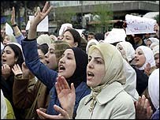

|
|
سوريه دست به سركوب زنان ميزند
ترجمه: سیمین رادمنش
چهار شنبه28 اردیبهشت 1390
منبع: AFP
تغییر برای برابری: همزمان با راه اندازي موج تازه اي از سركوبها عليه معترضان ضد حكومتي توسط رييس جمهور بشار اسد، زنان معترض مورد هدف قرار گرفته اند.

يك زن فعال حقوق بشر در جريان تظاهراتی با عنوان " جمعهي زنان آزاد" دستگیر شد؛ در این تظاهرات، هزاران معترض در همهي شهرهاي سراسر سوریه در همبستگي با تمام كساني كه در قيام هشت هفته اي كشته يا زنداني شده اند به خيابان ها آمدند.
به گزارش سازمان ملل، از زمان شروع اعتراضها بيش از 850 نفر از تظاهرات كنندگان كشته شدهاند.
در هفتهي گذشته، همزمان با تيراندازي نظاميان به سمت معترضان در منطقهي مرکب- در نزديكي شهر كواستال- چهار زن بر اثر شليك گلوله كشته شده و صدها نفر از زنان فعال دستگير شده اند.
كاترين ال طلي- فعال حقوق بشر- که 32ساله است درساعت شش بعدازظهر در برازه- منطقه اي در دمشق- توسط پليس دستگير شد. او را وادار کردند تا از ميني بوسي كه در منطقهي بازرسي وسائل نقليه توسط پليس امنيتي متوقف شده بود شد، پیاده شود و سپس ماموران پليس امنيتي او را با خود بردند. رامي عبدالرحمان- ديده بان حقوق بشر در سوريه- در اين مورد گفت:«ما از محل نگهداري او اطلاعي نداريم. هدف گيري زنان اتفاق تازه اي است و اين موضوع جامعهي سوريه را خشمگين كرده است».
فيلمهاي ويدئويي شامل تصاوير اجساد زنان معترض كشته شده در "بانياز" به شبكهي يوتيوب ارسال شده اند.
برغم دستور رئيس جمهور بشار اسد مبني بر شلیک نکردن به معترضان، شش نفر از تظاهرات كنندگان در روز جمعه به وسيله ي شليك گلوله كشته شده اند. دست كم سه نفر ديگر از معترضان ديروز در شهر مرزي "تال كلاخ" كشته شده اند.
يك شاهد گفت: نيروهاي امنيتي اي كه از ديروز صبح "تال كلاخ" را محاصره كرده بودند با مسلسل به مردم تيراندازي مي كردند. يك منبع مطلع از بيمارستان هاي سراسري لبنان هم گفت: مردي به نام " علي باشا"، كه پس از زخمي شدن با گلوله از سوريه فرار كرده و در يك بيمارستان لبناني بستري شده بود بر اثر شدت جراحات درگذشت.
محمد خزال- رئيس شوراي شهر- اعلام كرد: بيش از 500 نفر كه بيشتر آن ها را زنان و كودكان تشكيل مي دادند، از مرزها فرار كرده اند.
رزان زيتونه- يك زن 34 سالهي فعال حقوق بشر- توسط مقامات سوريه احضار شده است. او از ماه مارس و پس ازاین که از سوی تلویزیون دولتی به " عامل خارجي" متهم شد، مخفي شده است. وي اطلاعاتي را در مورد وضعيت شهر جنوبي محاصره شده ي "درعا" به رسانه هاي خارجي منتقل كرد. پليس در هفته ي گذشته همسر وي "وائل همادا"، فعال حقوق بشر را دستگير كرد.
دو هفتهي پيش ماموران وزارت اطلاعات، با هدف دستگيري وي به خانه شان حمله كردند و در غياب آقاي همادا در منزل، برادر بيست ساله ي او را دستگير كردند. از آن زمان تا به حال خبري از وي در دست نيست.
خانم زيتونه در اين مورد گفت:« شنيدن اين که چگونه با همسرم رفتار شده، برایم بسيار دردناك بود». او گفت:« من تلاش مي كنم به اين موضوع فكر نكنم. صدها نفر از دوستان من دستگير شده اند. ما همه در اين درد بزرگ شريك هستيم». وي همچنين تصميم دولت در مورد «گفتمان ملي" را به عنوان تصميمي بي معني رد كرد و افزود:«اين يك دروغ است. آن ها تنها با افراد خاصي به گفتگو خواهند نشست، كساني كه در واقع نمايندگان خودشان هستند».
زیتونه در حال حاضر به صورت مخفيانه و زيرزميني زندگي مي كند و با اين وجود به صورت آنلاين به انتشار موارد نقض حقوق بشر ادامه مي دهد.